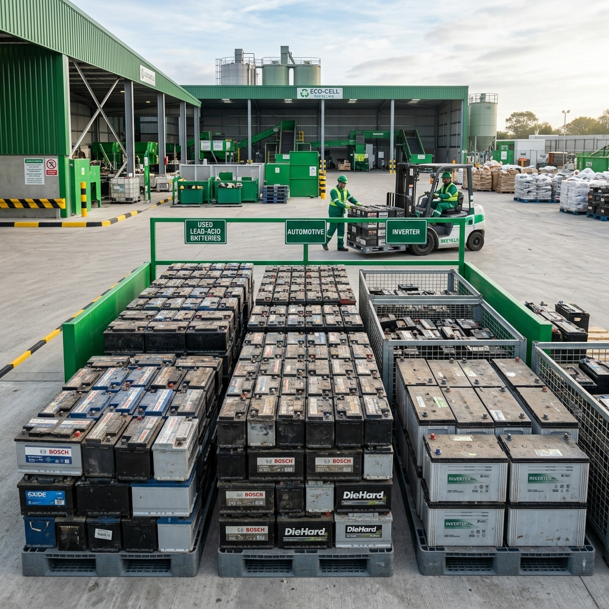
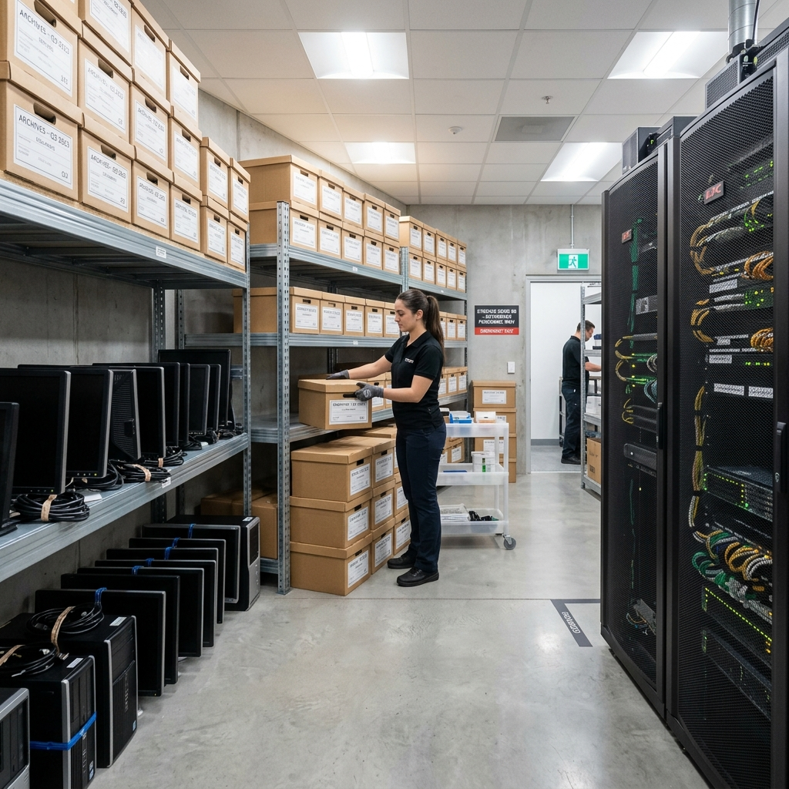
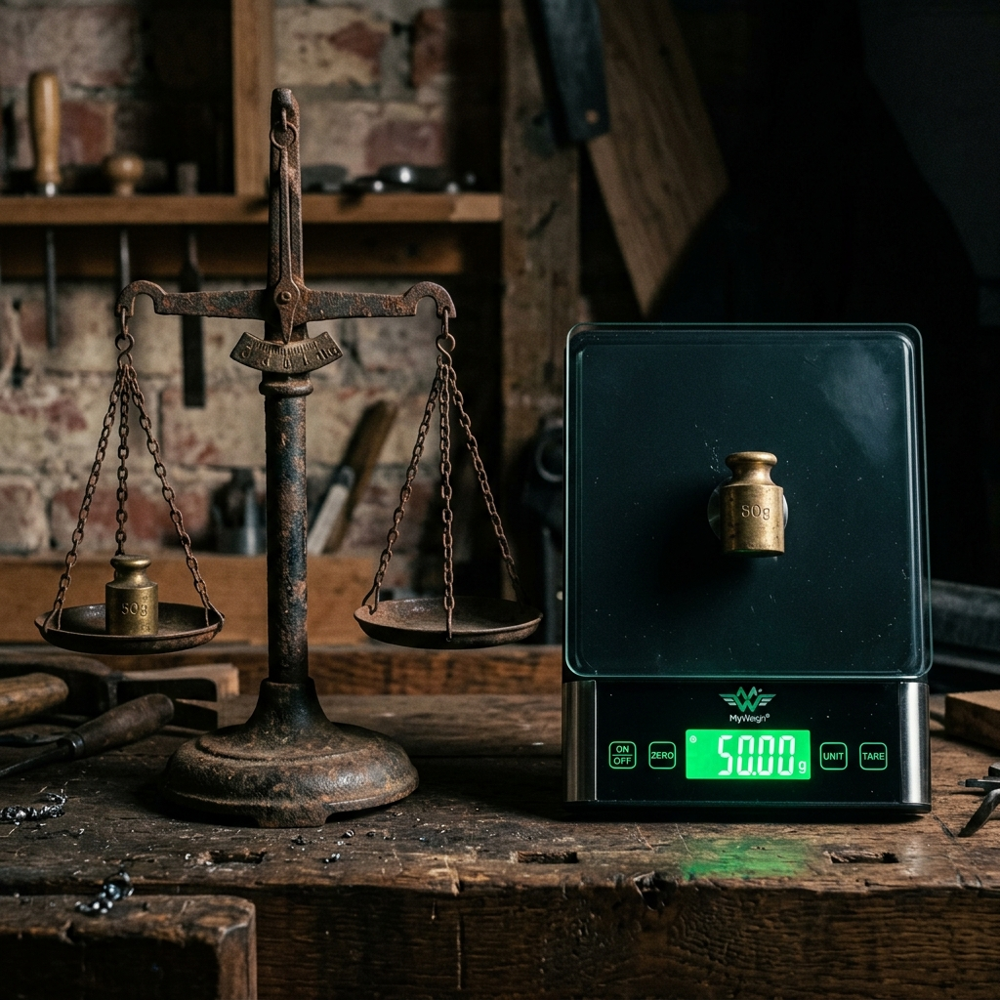
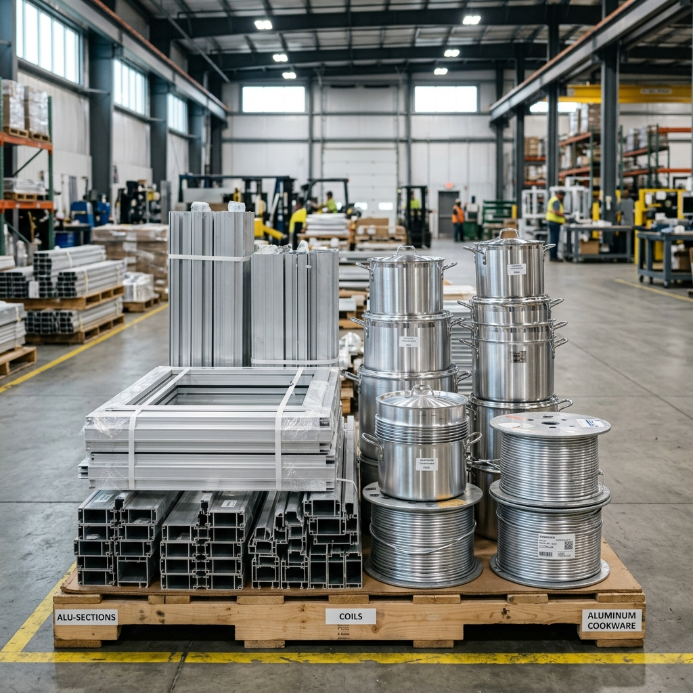
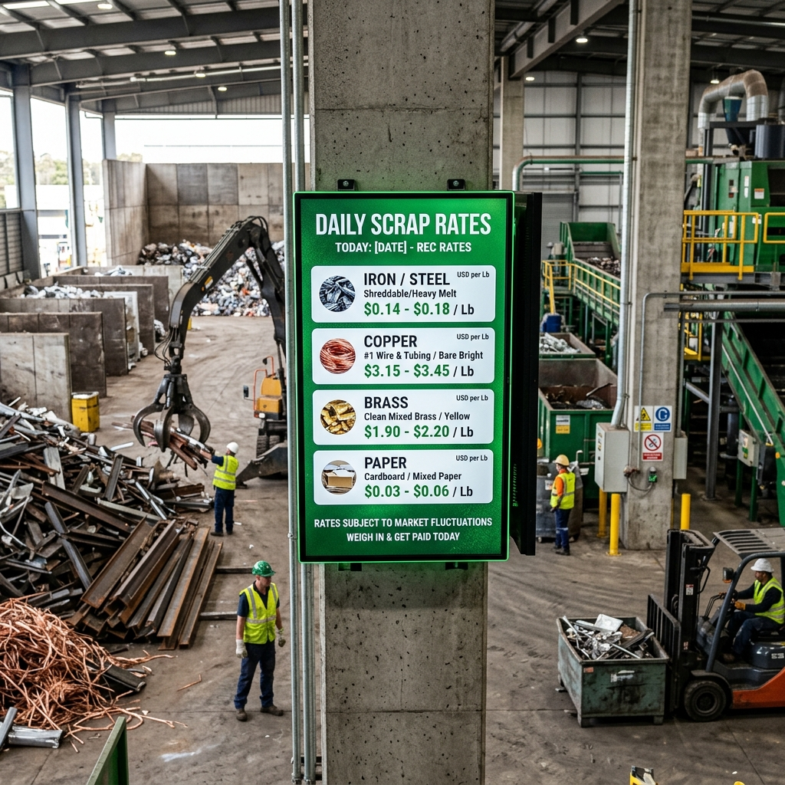
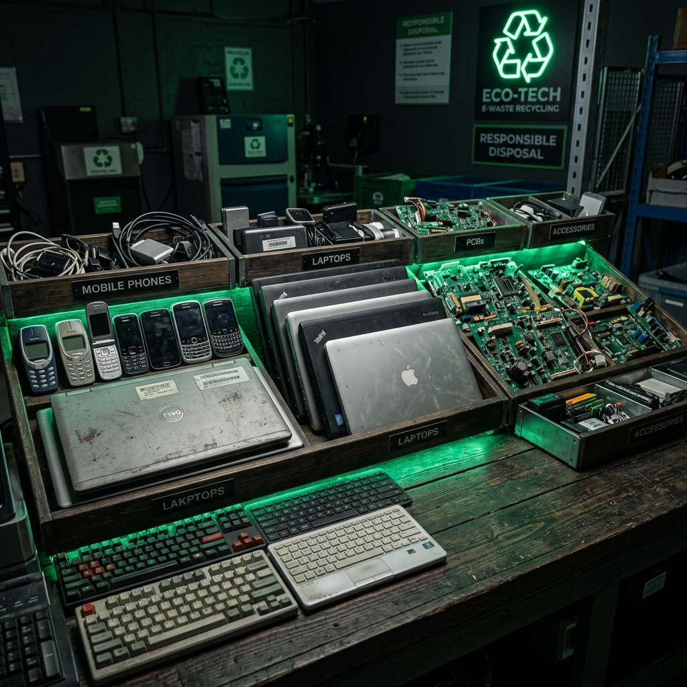
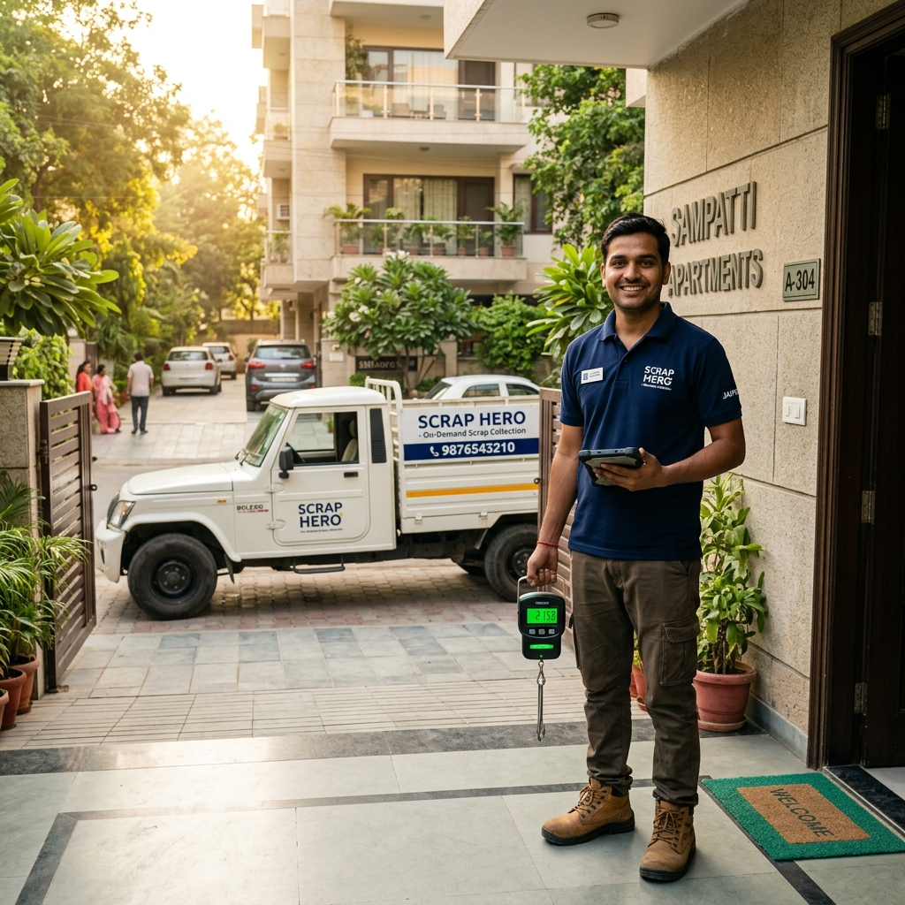

Lead-Acid Battery Scrap Price in Jaipur | Sell Old Car Battery for Cash
Broken car battery or inverter battery lying in your garage? Find out today's lead-acid battery scrap rates in Jaipur, safety handling tips, and how to get maximum cash.

Unlocking Value from Copper & Brass: Household Scrap Identification Guide
Copper and Brass are among the highest-paying scrap materials. Learn how to identify yellow brass, copper wiring grades, and get the maximum scrap rates today in Jaipur.

Office De-cluttering & Commercial Scrap Guide for Businesses in Jaipur
Is your office or warehouse cluttered with dead computers, obsolete files, and cardboard packaging? Learn how companies in Jaipur manage bulk scrap and secure e-waste disposal.

Digital Weighing vs Manual Scales: Why Traditional Kabadiwalas Cheat You
Do you trust traditional street scrap collectors? Learn the common weighing tricks (magnet weights, spring scales) and why certified digital scales protect your scrap's true value.

Aluminium Scrap Recycling in Jaipur: Kitchen Utensils to Door & Window Sections
Aluminium is 100% recyclable! Learn about the scrap rates for old utensils, alloy wheels, and commercial window frames in Jaipur, and see how much cash you can earn today.

Scrap Rate Today in Jaipur 2025 — Iron, Copper, Paper, Plastic Kabadi Rates
Looking for today's kabadi rates in Jaipur? Get accurate, updated scrap prices for iron, copper, aluminium, newspaper, plastic and more. Know exactly how much your scrap is worth before calling any kabadi wala.
.jpg)
Newspaper Raddi Price in Jaipur — Get Maximum Value for Old Papers
Old newspapers piling up at home? Discover the current raddi paper prices in Jaipur, how rates are calculated, and how to get the best deal from a trusted kabadi wala near you.

E-Waste Disposal in Jaipur — Safely Recycle Old Electronics & Get Paid
Broken phones, old laptops, dead batteries lying at home? Learn how to safely and legally dispose of e-waste in Jaipur and earn cash in the process with doorstep pickup.

Kabadi Wala Near Me in Jaipur — Free Doorstep Scrap Pickup Same Day
Searching for a reliable kabadi wala near you in Jaipur? Find out how to book a same-day, free doorstep scrap pickup service in Mansarovar, Vaishali Nagar, Amrapali Circle and 25+ areas.

5 Powerful Benefits of Recycling Scrap from Your Home in Jaipur
Recycling is not just about the environment — it puts real cash in your pocket! Discover 5 powerful reasons why every Jaipur household should regularly call a kabadi wala for scrap pickup.